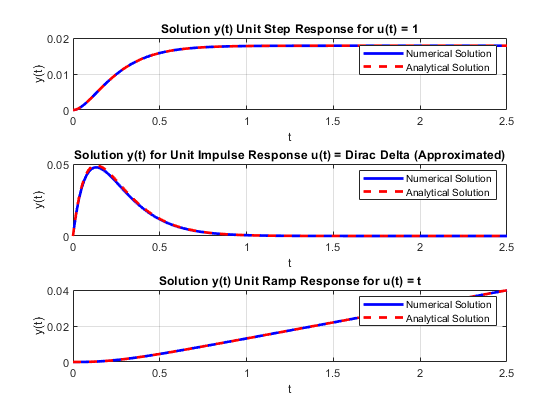

%Abhishek Ghosh %ME21BTECH11001 %Question 3 % % Parameters % tspan = [0 2.5]; % Time interval % y0 = [0; 0]; % Initial conditions: y(0) = 0, dy(0) = 0 % % % Case 1: u(t) = 1 % u1 = @(t) 1; % Define the function u(t) = 1 % [t1, y1] = ode45(@(t, y) odefunc(t, y, u1), tspan, y0); % % % Case 2: u(t) = t % u2 = @(t) t; % Define the function u(t) = t % [t2, y2] = ode45(@(t, y) odefunc(t, y, u2), tspan, y0); % % % Case 3: u(t) = Dirac Delta approximation % impulse_magnitude = 100000; % Large magnitude to approximate Dirac delta % impulse_duration = 0.00001; % Very short duration for impulse % u_dirac = @(t) (t >= 0 & t <= impulse_duration) * impulse_magnitude ; % % [t_dirac, y_dirac] = ode45(@(t, y) odefunc(t, y, u_dirac), tspan, y0); % % % Plotting the results % figure; % % % Plot for u(t) = 1 % subplot(3, 1, 1); % plot(t1, y1(:, 1), 'b', 'LineWidth', 2); % title('Solution y(t) for Unit Step Response u(t) = 1'); % xlabel('t'); % ylabel('y(t)'); % grid on; % % % Plot for u(t) = Dirac Delta approximation % subplot(3, 1, 2); % plot(t_dirac, y_dirac(:, 1), 'g', 'LineWidth', 2); % title('Solution y(t) for Unit Impluse Response u(t) = Dirac Delta (Approximated)'); % xlabel('t'); % ylabel('y(t)'); % grid on; % % % Plot for u(t) = t % subplot(3, 1, 3); % plot(t2, y2(:, 1), 'r', 'LineWidth', 2); % title('Solution y(t) for Unit Ramp Response u(t) = t'); % xlabel('t'); % ylabel('y(t)'); % grid on; % % % % Function to define the system of first-order ODEs % function dydt = odefunc(t, y, u) % dydt = zeros(2, 1); % dydt(1) = y(2); % dy1/dt = y2 % dydt(2) = u(t) - 15 * y(2) - 56 * y(1); % dy2/dt = u(t) - 15*y2 - 56*y1 % end % Parameters for the ODE tspan = [0 2.5]; % Time interval y0 = [0; 0]; % Initial conditions: y(0) = 0, dy(0) = 0 impulse_magnitude = 100000; % Large magnitude to approximate Dirac delta impulse_duration = 0.00001; % Very short duration for impulse % Numerical Solutions Using ode45 % Case 1: u(t) = 1 u1 = @(t) 1; % Define the function u(t) = 1 [t1_num, y1_num] = ode45(@(t, y) odefunc(t, y, u1), tspan, y0); % Case 2: u(t) = t u2 = @(t) t; % Define the function u(t) = t [t2_num, y2_num] = ode45(@(t, y) odefunc(t, y, u2), tspan, y0); % Case 3: u(t) = Dirac Delta approximation u_dirac = @(t) (t >= 0 & t <= impulse_duration) * impulse_magnitude; [t_dirac_num, y_dirac_num] = ode45(@(t, y) odefunc(t, y, u_dirac), tspan, y0); % Analytical Solutions Using Laplace Transforms % Analytical solution for u(t) = 1 y1_analytical = @(t) ((1/56) + (1/8) *(exp(-8*t)) - (1/7) * exp(-7*t)); % Analytical solution for u(t) = t y2_analytical = @(t) ((1/56) * t + (1/49) *(exp(-7*t)) - (1/64) * exp(-8*t) - 15/3136); % Analytical solution for u(t) = Dirac Delta y_dirac_analytical = @(t) (exp(-7*t) - exp(-8*t)); % Time vector for plotting analytical solutions t_analytical = linspace(0, 2.5, 1000); % Plotting the comparison between numerical and analytical solutions figure; % Case 1: u(t) = 1 subplot(3, 1, 1); plot(t1_num, y1_num(:, 1), 'b', 'LineWidth', 2); hold on; plot(t_analytical, y1_analytical(t_analytical), 'r--', 'LineWidth', 2); title('Solution y(t) Unit Step Response for u(t) = 1'); xlabel('t'); ylabel('y(t)'); legend('Numerical Solution', 'Analytical Solution'); grid on; % Case 3: u(t) = Dirac Delta approximation subplot(3, 1, 2); plot(t_dirac_num, y_dirac_num(:, 1), 'b', 'LineWidth', 2); hold on; plot(t_analytical, y_dirac_analytical(t_analytical), 'r--', 'LineWidth', 2); title('Solution y(t) for Unit Impulse Response u(t) = Dirac Delta (Approximated)'); xlabel('t'); ylabel('y(t)'); legend('Numerical Solution', 'Analytical Solution'); grid on; % Case 2: u(t) = t subplot(3, 1, 3); plot(t2_num, y2_num(:, 1), 'b', 'LineWidth', 2); hold on; plot(t_analytical, y2_analytical(t_analytical), 'r--', 'LineWidth', 2); title('Solution y(t) Unit Ramp Response for u(t) = t'); xlabel('t'); ylabel('y(t)'); legend('Numerical Solution', 'Analytical Solution'); grid on; % Function to define the system of first-order ODEs function dydt = odefunc(t, y, u) dydt = zeros(2, 1); dydt(1) = y(2); % dy1/dt = y2 dydt(2) = u(t) - 15 * y(2) - 56 * y(1); % dy2/dt = u(t) - 15*y2 - 56*y1 end